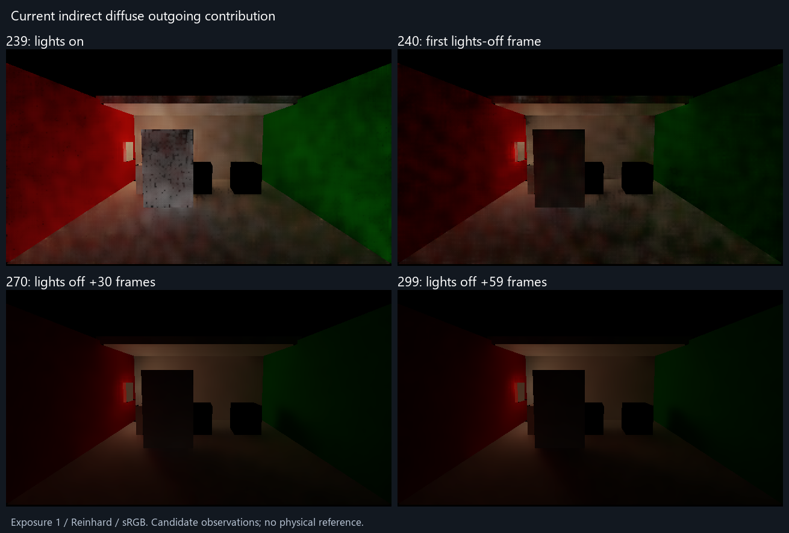
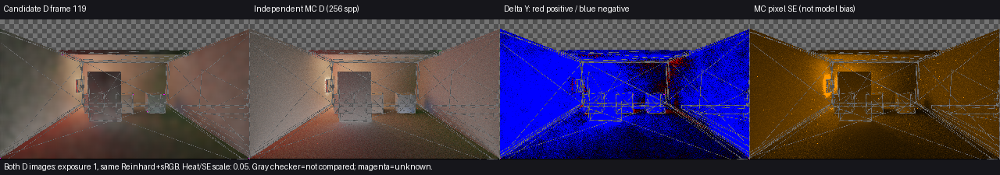
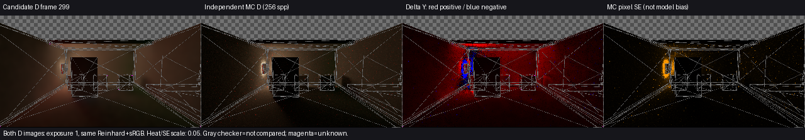
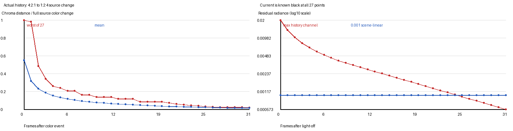
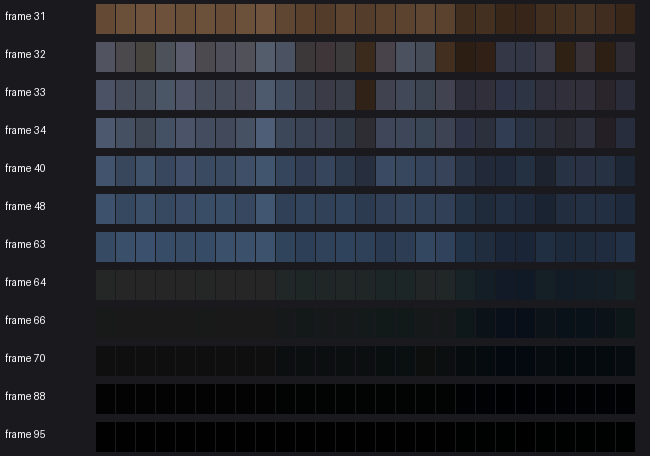
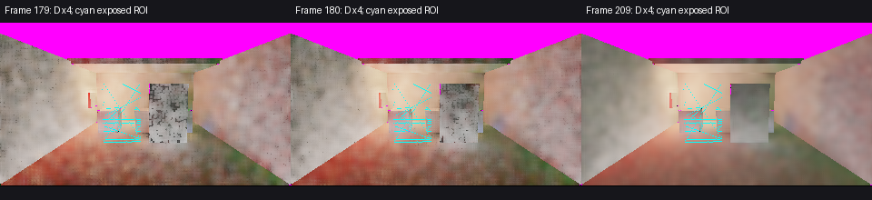
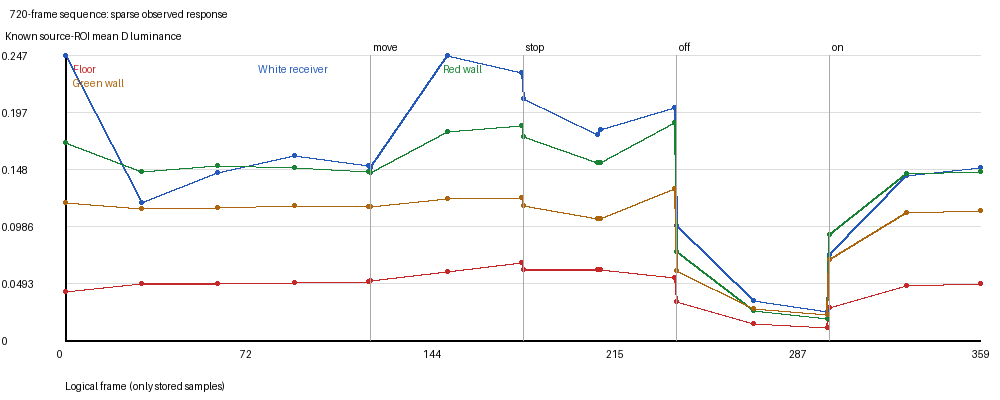
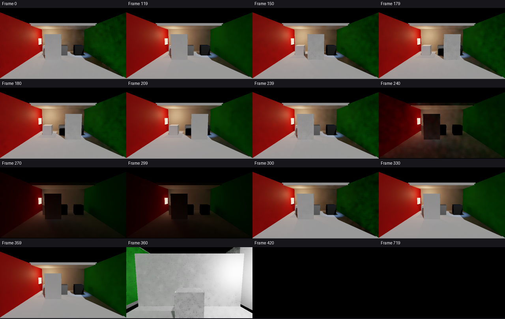

修后补充：当前版本关灯四图与解释。关灯当帧明显变暗，后30与59帧仍有变化；新量为间接漫反射出射贡献，不能直接与下文旧D参考计算物理误差。

当前有两项可见问题：灯亮时漫反射间接光偏暗，换色和关灯后旧照明消退偏慢。相机新显露处的旧历史拒绝已在限定场景中有效；完整场景颜色准确度和多跳收敛仍未关闭。
对比的是漫反射入射量 D=E/π，不是 Final 图。参考由源几何/材质/灯光独立 CPU 路径追踪产生（256 spp、8次弹射），不读取候选颜色。主要看非金属且非零漫反射的 Floor / White receiver；全图汇总不用于把金属/黑材质合法早退的 D=0 归为颜色错误。 灯亮静止到frame119时，Floor / White 的平均亮度分别比参考低28.9% / 33.4%；关灯后59帧则分别高95.9% / 147.1%。这些是同源、同相机的偏差估计，表中的采样误差与下述模型局限必须同时看。Floor有13330个源域点，其中2点未知；White有86点，全部已知，不能把这个较小ROI当作全场景。
| 状态 | 源几何ROI | 已知点数 | 候选 D-Y | 独立参考 D-Y | 均值偏差估计 | 参考像素SE均值上界* | 均值色向 L1 |
|---|---|---|---|---|---|---|---|
| 灯亮静止 | Floor | 13328 | 0.050963 | 0.071689 | -28.9% | 0.010990 | 0.0271 |
| 灯亮静止 | White receiver | 86 | 0.151184 | 0.226957 | -33.4% | 0.017631 | 0.0696 |
| 关灯后59帧 | Floor | 13328 | 0.010480 | 0.005351 | +95.9% | 0.001107 | 0.0487 |
| 关灯后59帧 | White receiver | 86 | 0.025003 | 0.010119 | +147.1% | 0.001709 | 0.1029 |
*SE 列是参考逐像素 RGB 标准误按亮度权重求和后的 ROI 均值，保守描述采样噪声，不是 ROI 均值置信区间或总误差界。此次 filteredD 的产品和参考都采用硬阴影、都不含镜面路径，不能用原生 PCF 或镜面缺失解释这里的 D 差异；这些只是与完整 Final 比较时的边界。实际差别有三项：产品按预算更新、插值世界缓存并保留历史，参考独立追踪8段路径；产品使用 rayBias=0.03、screenSteps=24、thickness=0.15、traceDistance=50、shadowDistance=200，参考使用近零偏移、精确三角形求交且不截断射线距离；产品使用1 rpp、时域累积和3轮空间滤波，参考为256 spp的逐点估计并带有蒙特卡洛噪声，近发光面尤其可能有高方差。可见偏差不能忽略，但百分比不能宣称为精确产品误差。色向 L1 比较归一化 ROI 平均 RGB，范围0到2，与亮度误差分开。


单反弹有限色墙：27个预定接收点都获得已知当前测量。4:2:1→1:2:4 换色后，历史平均色向距离仍为本次完整换色幅度的54.9%，31个后续帧后约1.30%。最坏点要16帧后低于10%、23帧后低于5%、31帧后低于2%；32帧观察窗内没有全体低于1%。这是实际色向残留，不是绝对辐射强度误差。
同一零源专项关闭唯一灯后，当前27点全部当帧已知黑，历史最高RGB仍为0.019989；2个后续帧降到0.009987，25帧后才低于0.001，31帧后为0.000573。60Hz仅作示意：25帧≈0.42秒、31帧≈0.52秒；这不是本次机器实测帧率。完整720场景关灯仍保留发光材质，不能要求黑。与同源参考相比，Floor/White在59帧后仍明显偏亮，且默认bounceFeedback=1，屏幕历史和当前多跳缓存估计必须分开处理。


真实相机移动+TAA专项：57个由源几何选出的新显露点，第一帧 history RGB 与 current RGB 差全部为0、history age=1；561个持续可见控制没有被全局清零。该结论覆盖这些平面显露点，不证明所有运动、遮挡和空间滤波都无拖影。720场景门停止后，新显露ROI共2250点、2249点有配对已知值：停止帧179对帧209的D平均绝对变化为晚帧均值的8.8%，下一帧180为7.1%；画面仍有运动后的斑点/变化，但209是候选晚帧，不是独立无拖影真值。

720序列有720个渲染收据，但只存32张HDR。静止场景相对候选晚帧119的平均绝对变化，从frame0的28.7%降为frame30/60/90的约7.0–7.6%；这说明早期画面变化下降，不能等同物理颜色已收敛。关灯只采239/240/270/299，恢复只采300/330/359：只能报告这些观测点或时间区间，无法给缺失中间帧伪造精确收敛时刻。 恢复灯光当帧，Floor / White 比独立参考低60.7% / 67.5%；30帧后为33.9% / 37.1%，59帧后仍为31.7% / 34.4%。因此可以说它在30–59帧的采样区间接近此前偏暗状态，不能说它已收敛到正确颜色；本次观测窗内没有证据关闭这个误差。
已提交给集成的最小修复：实际全局灯光版本变化时，若当前测量已知，清屏幕旧历史；unknown仍保留/限龄，静态帧及普通移动reactive保持。实际CSTemporal的WARP对照把已知黑的0.019989残留变为0、age1。此处展示的09图仍是修复前数据，不能称为Release74实机改善。该修复不自动解决局部MPB换色和多跳缓存里的当前估计残留；后续开发应优先处理这两个具体来源。


所有候选/参考辐射图共用曝光1和Reinhard+sRGB；没有各自自动拉亮。门停D对照统一乘4以看清结构。PNG仅垂直翻转方便观看，所有数值仍用原始矩阵/行对齐。灰棋盘=源域不比较（含边界/天空），洋红=未知，均不当作黑色；误差图红=候选偏亮、蓝=偏暗，固定量程0.05。
颜色强度与动态时间不是同一个指标。参考是近似漫反射D，截图是观察证据；没有把缺参考、unknown或源边界提升为质量通过。